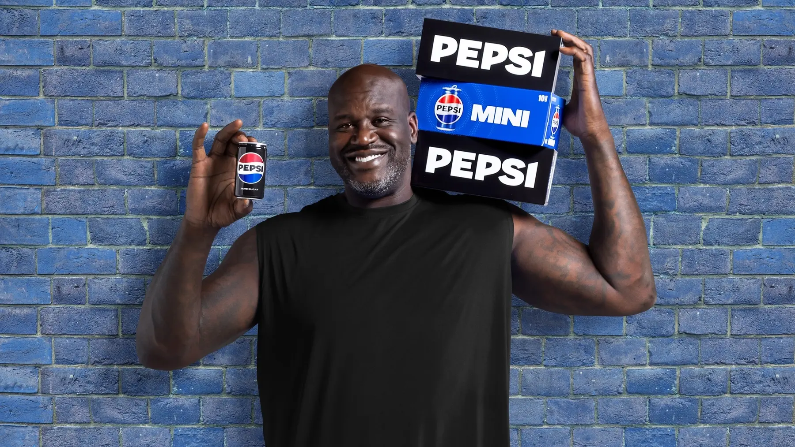
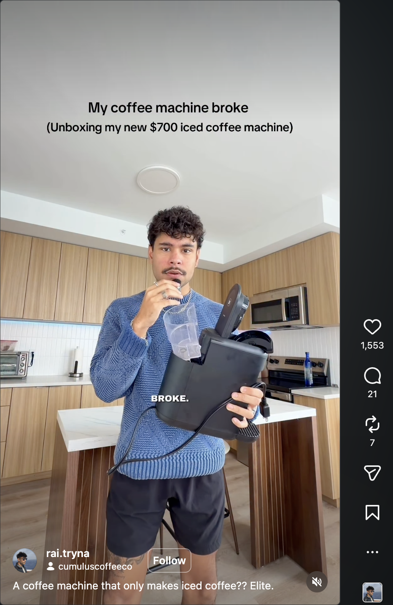
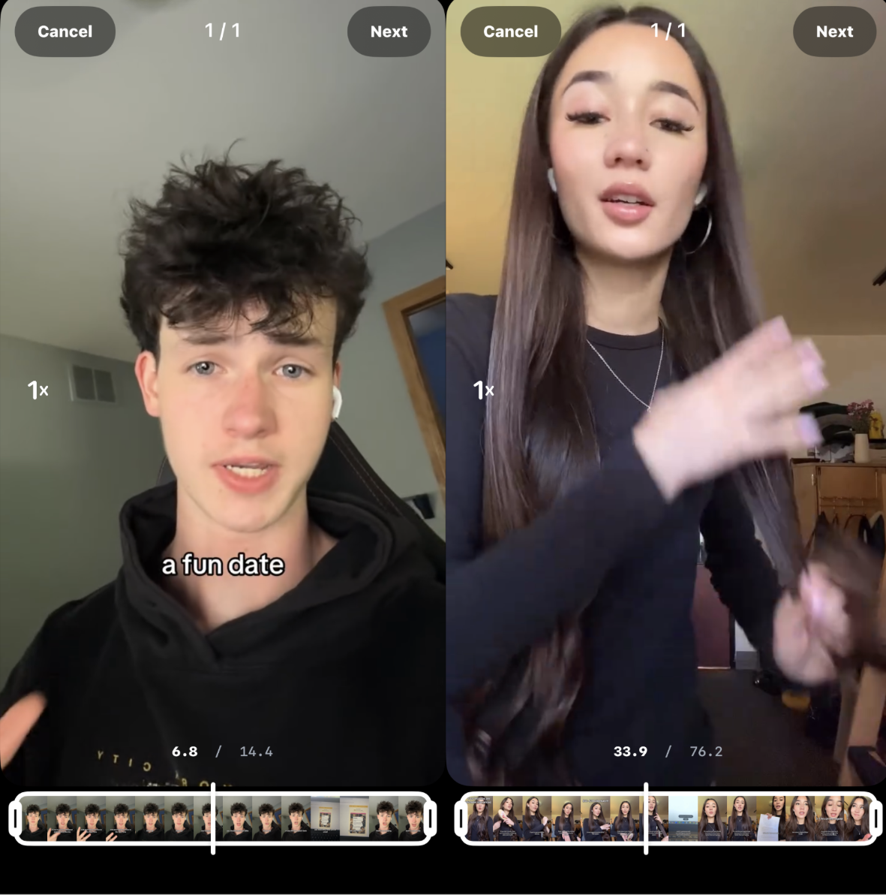
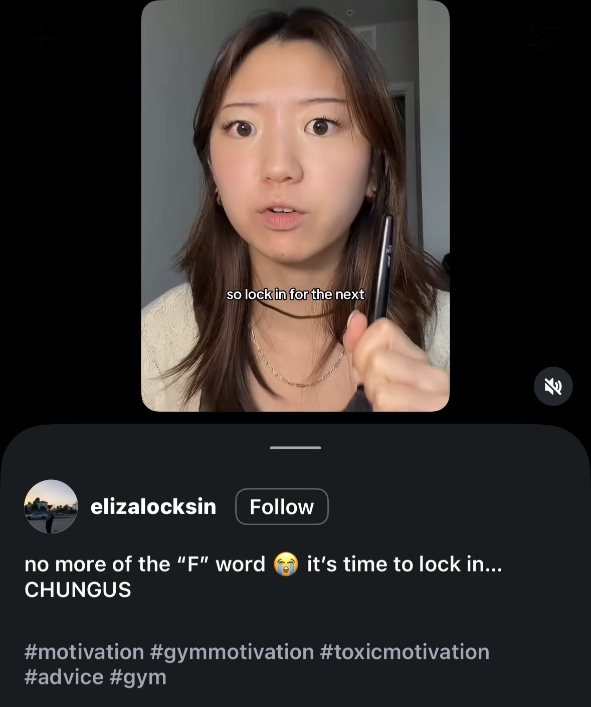
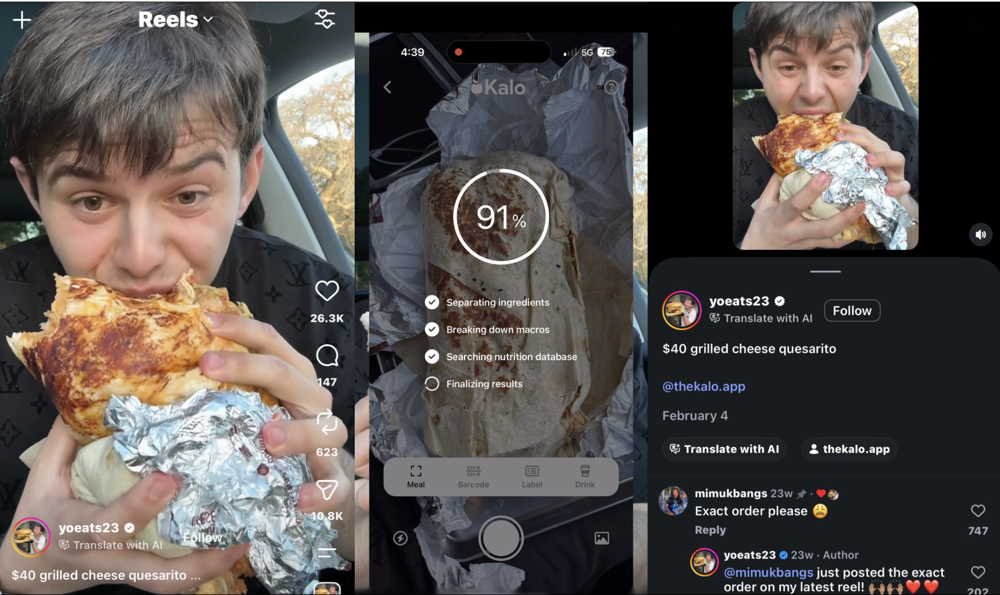
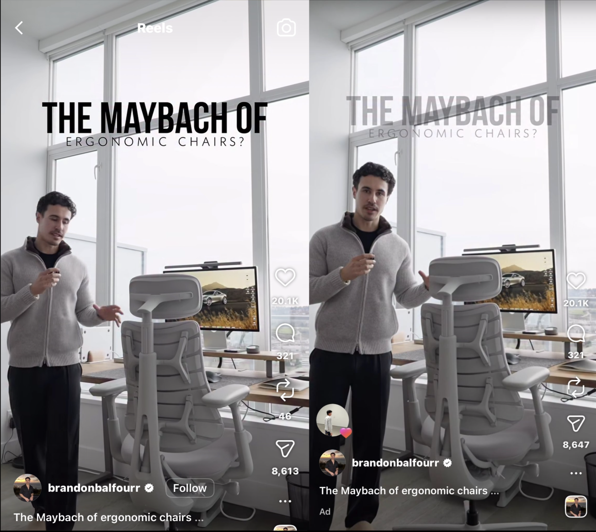
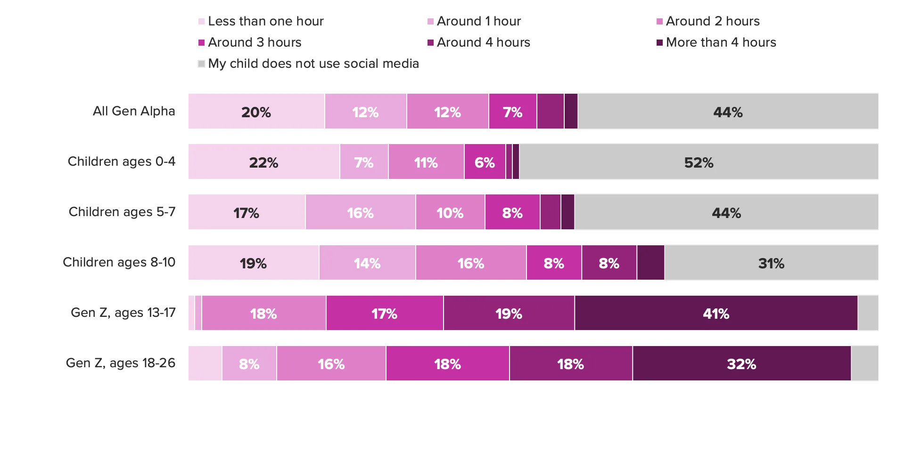

When Advertising Stops Looking Like Advertising: UGC, Disclosure Failure, and the Limits of Current Advertising Law
Joshua Shavit • Sophomore at UC Berkeley • CITRIS Tech Policy Working Group
For most of modern advertising history, ads were easy to recognize. Television commercials, print ads, banner placements, and platform-sponsored posts were designed to stand apart from surrounding content. Even when consumers ignored them, they usually understood one basic fact: they were being advertised to.

A TV commercial for Pepsi, featuring Shaq. It aired during NBA games and Thanksgiving NFL games.
That understanding has become much less consistent on social media, where a new form of advertising, known as user-generated-content (UGC), is emerging. According to Flockler, around 78% of online content will be user-generated by 2033. Furthermore, 84% of buyers trust recommendations from their peers over all types of advertising. As social media increasingly becomes the standard destination for Gen-Z marketing, an important question emerges: can consumers viewing UGC still reliably recognize when they are being advertised to?
Traditional advertising refers to promotional content that is clearly identifiable as advertising when consumers encounter it. Whether through television commercials, print advertisements, banner ads, sponsored posts, or billboard campaigns, these formats are designed to distinguish themselves from surrounding content. Consumers may choose to ignore them, but they are generally aware that they are being presented with an advertisement.
User-generated content refers to promotional content created by individuals rather than brands. This may include videos, reviews, photos, social media posts, testimonials, tutorials, or other forms of content published by consumers, social media creators, employees, or brand representatives. UGC can be entirely organic, created without any relationship to a brand, or it can be produced as part of a commercial arrangement.
Ultimately, the distinction between traditional advertising and UGC is primarily one of authorship. Traditional advertising is produced by brands themselves (and sometimes in partnership with agencies or production companies), while UGC is produced by individuals. This distinction becomes important because different forms of UGC may involve different types of relationships between creators and brands, some of which may constitute material connections under FTC guidance.

In this reel, the creator was sent a $700 iced coffee machine for free, representing one kind of material connection.
UGC is not one single thing. Organic UGC is when ordinary consumers post about products without payment or formal brand relationships. Paid UGC contractors create content for brands in exchange for money, free products, or licensing rights. Affiliate creators may earn commissions through links or discount codes. Intern-based and campus ambassador programs can also produce promotional content while appearing more like informal student or lifestyle accounts, often compensating participants through hourly pay, per-video payments, free products, networking opportunities, or other incentives. These business models matter because they create different kinds of “material connections.”
Under the FTC’s endorsement framework, a material connection can include money, free products, employment relationships, affiliate incentives, or other benefits that could affect the credibility of an endorsement. The issue is not that UGC is automatically deceptive. The issue is that many UGC formats make these relationships hard for viewers to recognize.
UGC manifests in many forms, ranging from product demonstrations and unboxing videos to reviews, tutorials, and lifestyle content. One increasingly common approach is a presentation style that this report refers to as "peer-style UGC."
Peer-style UGC’s role is not simply a business model, but a presentation style that describes promotional content that uses the tone, pacing, and social language of ordinary non-sponsored posts. Instead of saying “I am promoting this product,” creators often frame the content as discovery: “I just found this,” “let me put you onto this,” or “this changed my routine.”
This style is powerful because it changes how advertising is perceived. The persuasive force does not come from celebrity authority or polished production. It comes from authenticity, relatability, and the impression that the creator is sharing a genuine personal experience. In peer-style UGC, the goal is not necessarily for advertising to disappear (though in many cases it does), but for it to be disguised into ordinary communication.
The FTC's endorsement framework requires creators to disclose material connections clearly and conspicuously. A disclosure should be difficult to miss and understandable to ordinary consumers.
The FTC's guidance for social media influencers also says disclosures should appear with the endorsement itself, not only in a profile, at the end of a post, behind a “more” button, or only in a video description.
These rules are built around three practical assumptions about how consumers encounter and interpret advertising. First, consumers can recognize advertising when they encounter it. Second, disclosure is visible at the moment it matters. Third, once consumers understand a material connection, they can adjust how they interpret the message. However, the presentation methods of peer-style UGC challenges all three.
The first failure is timing. In many peer-style videos, the product or service appears only after a narrative hook has already pulled the viewer in. A reel might begin as a dating story, a study tip, a fitness joke, or a lifestyle recommendation before pivoting into promotion. By the time the ad becomes clear, the viewer has already mentally categorized the content as an ordinary, non-sponsored post.

In the reels I sampled, promotional elements appeared more than halfway through the video on average. These side-by-side images shows Instagram’s sequencing mode, where you can scrub across the video. I’ve intentionally left the marker for these exactly where the advertisement transitions in - which is around halfway through.
The second failure is visibility. In many examples, disclosure is absent entirely. In others, disclosure may be placed in a caption, hidden beneath a “more” button, or suggested only through hashtags, tags, bios, or external links. That kind of disclosure may technically exist somewhere, but it is not necessarily encountered when the viewer is actually interpreting the content.

A screenshot of the description section of an Instagram Reel. While the reel contained an advertisement, no FTC-compliant disclosure methods were employed in the description, only hashtags to help with the Instagram algorithm.
Some promotional content falls into an ambiguous category where viewers may reasonably suspect a commercial relationship but cannot determine whether one exists. In one reel sampled for this report, a food creator begins by reviewing an oversized burrito, creating the expectation of a typical food review. Midway through the video, however, the creator unexpectedly introduces and tags an AI calorie-tracking application despite not featuring similar products elsewhere in the sample examined.
No clear sponsorship disclosure accompanies the post. Whether a material connection actually existed cannot be determined from the publicly available content. Nevertheless, the example illustrates a broader problem: consumers are often left to infer whether content is advertising at all.
A food reviewer introduces an AI calorie-tracking application midway through a burrito review. The expanded caption contains only a tagged brand account rather than a clear disclosure of any material connection.
The third failure is interpretation. Even when disclosure exists, authenticity can weaken its effect. Many creators promote products that fit their normal identity and content style. A lifestyle creator who already posts home recommendations can run an ad for a chair that looks almost identical to their organic “favorite home finds” content. Viewers may think, “Yes, this is an ad, but this is also something they would actually use.” In that case, disclosure is not ignored; it is discounted.

The creator posted the same video in two contexts. On the left, it appears as a standard post on their profile. On the right, the identical video is shown as an advertisement, marked only by a faint “Ad” label beneath the username.
This problem is not just caused by individual creators forgetting to disclose. It is produced by the incentive structure of short-form platforms. Platforms reward engagement, watch time, retention, and interaction. Content that feels organic and authentic often performs better than content that immediately signals itself as advertising.
Clear disclosure can introduce friction into this model. If users quickly recognize a post as an ad, they may scroll past it, distrust it, or disengage. That creates pressure for creators and brands to make promotional content feel as seamless and native as possible. In other words, the system rewards advertising that looks least like advertising.
The regulatory gap is not simply that some creators fail to follow the rules. The deeper issue is that the disclosure-based framework assumes advertising remains distinguishable from ordinary content. Peer-style UGC collapses that distinction at the level of the content itself.
As a result, compliance does not always equal transparency. A disclosure may exist, but appear too late, too subtly, or too separately from the content to meaningfully shape interpretation. From the law’s perspective, the content may be treated as disclosed. From the user’s perspective, it may still function as an undisclosed promotion.

This issue matters most for the people who are developing their understanding of advertising inside these platforms. Younger users are not just consuming short-form content; they are learning what advertising looks like through it. If ads increasingly appear as ordinary recommendations, the intuition that helps people identify persuasion may never fully develop.
That raises a broader question for the future of consumer protection. The FTC’s standard depends on disclosure being clear and conspicuous to ordinary consumers. But if the next generation learns to see advertising as just another form of content, what does it mean to be an informed consumer?